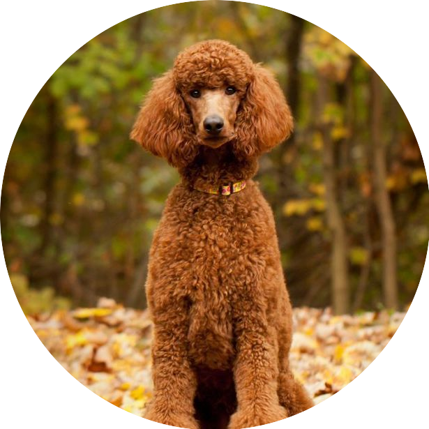
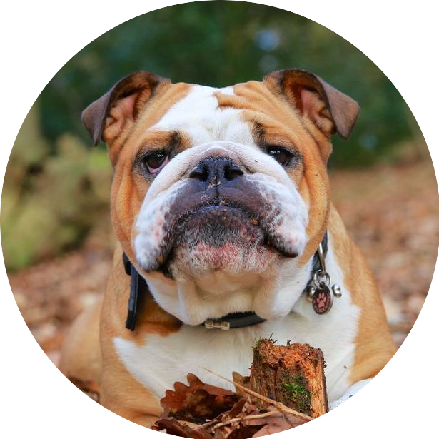
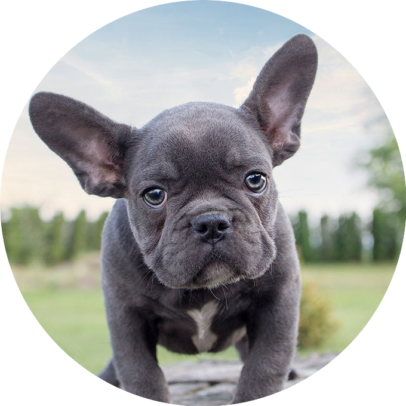
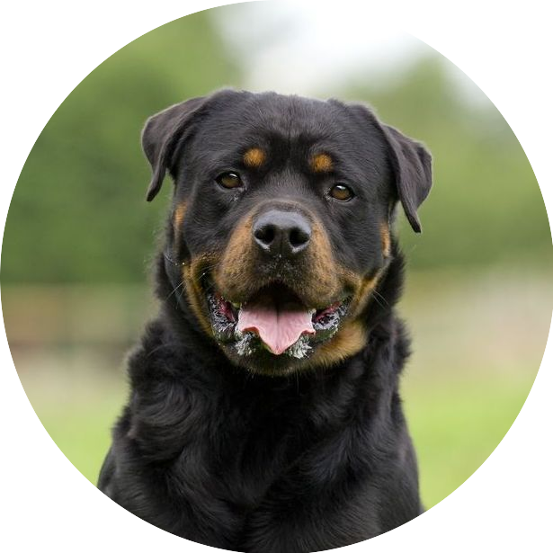
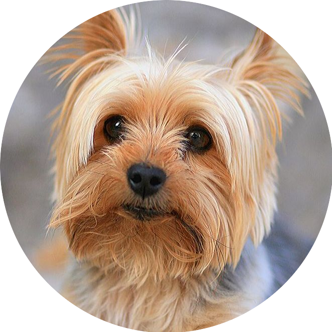
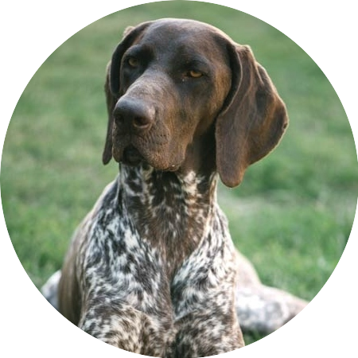
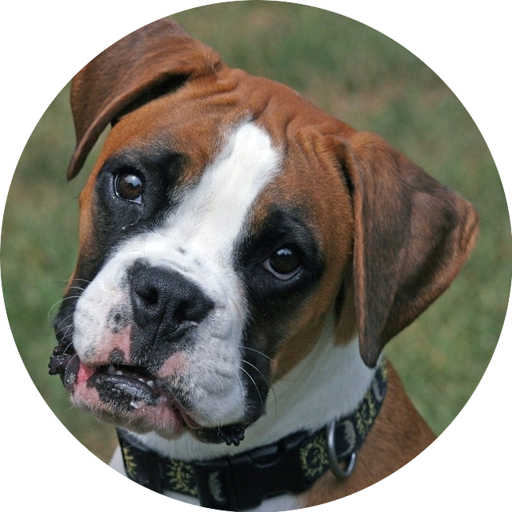
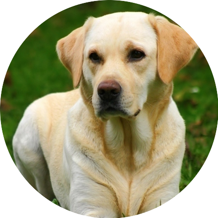

Beagle are un strat dublu de blană, moale și dens, care devine mai greu în timpul iernii, așa că primăvara acesta pică. Beagles, de asemenea, își schimbă părul moderat pe tot parcursul anului. Periajul săptămânal cu o perie cu dinți medii, o mănușă de bucătărie sau o unealtă din cauciuc va înlătura părul slăbit, promovând și creșterea acestuia. Ca și în cazul tuturor raselor, unghiile acestuia ar trebui să fie tăiate în mod regulat, deoarece prea lungi pot provoca dureri și astfel, probleme de mers sau de alergat.
ÎNGRIJIREA BLĂNII UNUI GOLDEN RETRIEVER
...
Goldens năpârlesc o dată sau de două ori pe an, și, de asemenea, le pică părul în cantități mici pe o perioadă lungă de timp. De cele mai multe ori, un periaj cu o perie subțire o dată sau de două ori pe săptămână va elimina o mare parte din părul mort înainte ca acesta să aibă o șansă de a cadea pe mobilier. În perioadele grele de năpârlire, aceste sesiuni de periaj devin zilnice. Băile ajuta la slăbirea părului mort, dar câinele trebuie să fie complet uscat înainte ca periajul să înceapă. În caz contrar, Goldens au nevoie doar de băi ocazionale pentru a le menține blana curată. Ca și în cazul tuturor raselor, unghiile ar trebui să fie tăiate în mod regulat.
ÎNGRIJIREA BLĂNII UNUI HUSKY SIBERIAN
...
Husky Siberian este considerat o rasă "naturală". Sunt remarcabil de buni la auto-curățare și de multe ori au nevoie doar de câteva băi pe an, cu excepția cazului în care participă la concursuri canine. Periajul săptămânal vă ajută să păstrați blana și pielea în stare bună. Siberianii au un strat dublu - un substrat și un păr de protecție. Substratul pică de două ori pe an și este important să se "înlăture" în permanență vechea blană, folosind o perie de pin și un pieptene de metal. Acordați o atenție deosebită lungimii unghiilor și păstrați-le tăiate pentru a preveni orice probleme a picioarelor. Siberienii care concurează în competiții necesită o îngrijire mai selectivă pentru cea mai bună prezentare.
ÎNGRIJIREA BLĂNII UNUI CIOBĂNESC GERMAN
...
Ciobănescul German are un strat dublu de lungime medie, format dintr-o blană densă, aspră, cu un substrat moale. Rasa este ușor de întreținut, de obicei necesită doar o periere rapidă la fiecare câteva zile, pentru a ajuta la îndepărtarea firelor de păr, dar acestea pică mai profund o dată sau de două ori pe an. În timpul acestor perioade, periajul mai frecvent ajută la controlul cantității de păr care pică în jurul casei și pe mobilier. Ciobanescul german are nevoie doar de o baie ocazională. Este important să-i tăiați unghiile în fiecare lună, dacă nu sunt uzate în mod natural, deoarece unghiile prea lungi pot cauza dureri și probleme structurale.

PUDEL

BULLDOG

BULLDOG FRANCEZ

ROTTWEILER
ÎNGRIJIREA BLĂNII UNUI PUDEL ...
Dacă nu intenționați să păstrați blana Pudelului dvs. tăiată scurt, va trebui să înveți cum să-l pieptănați zilnic pentru a împiedica încâlcituri. Dacă nu periați Pudelul complet până la piele, părul se va încâlci în apropierea rădăcinilor și va trebui ras pentru a începe cu o creștere nouă. Majoritatea proprietarilor de pudeli optează să păstreze blana scurtă. Unii dintre ei învață să facă această periere ei înșiși, în timp ce alții aleg să își ducă câinele la un salon profesionist la fiecare patru-șase săptămâni pentru o baie, periere, și tăiare a unghiilor. Blana pudelilor pică în cantități foarte mici, făcând această rasă să fie o alegere bună pentru persoanele cu alergii.
ÎNGRIJIREA BLĂNII UNUI BULLDOG ...
Un periaj cu o perie moale timp de 10 minute, de două sau trei ori pe săptămână, va păstra blana Bulldog-ului într-o condiție excelentă. În timpul perioadelor de năpârlire mai grele, poate ajuta să utilizați mai întâi o perie din cauciuc. Ridurile de pe fața buldogului trebuie verificate în mod regulat pentru a vă asigura că pielea este curată și uscată, deoarece alimentele sau umiditatea pot fi prinse și pot provoca iritații sau infecții. O dischetă de bumbac înmuiată în peroxid poate fi utilizată pentru a curăța ridurile și amidonul de porumb poate fi aplicat ulterior pentru a ajuta la uscare — deși nici unul nu trebuie utilizat în apropierea ochilor. Urechile și zona de sub coadă trebui să fie menținute curate, iar unghiile câinelui tăiate la fiecare două săptămâni.
ÎNGRIJIREA BLĂNII UNUI BULLDOG FRANCEZ
...
Blana scurtă a Bulldog-ului Francez pică în cantități minime. Periajul săptămânal cu o perie cu dinți medii, o mănușă de bucătărie sau mănuși de cauciuc va ajuta la îndepărtarea părului mort. Periajul promovează o nouă creștere a părului și distribuie uleiurile din piele în întregul strat pentru a-i menține sănătatea. Ridurile francezilor trebuie păstrate curate și uscate. Picioarele francezilor ar trebui să fie curățate în mod regulat, deoarece unghiile prea lungi pot provoca iritații.
ÎNGRIJIREA BLĂNII UNUI ROTTWEILER
...
Rottweiler-ul are un strat exterior drept, aspru, de lungime medie, care stă plat. Substratul este prezent pe gât și pe coapse. El ar trebui să fie periat săptămânal și îmbăiat în mod regulat. El năpârlește foarte moderat pentru cea mai mare parte a anului, deși el va năpârli mai profund de două ori pe an, de obicei primăvara și toamna. Dinții lui trebuie să fie periați și unghiile tăiate săptămânal. Utilizarea unui instrument de șlefuire, cum ar fi un Dremel, este deosebit de eficient pentru tăierea unghiilor.

YORKSHIRE TERRIER

BRAC GERMAN

BOXER

LABRADOR RETRIEVER
ÎNGRIJIREA BLĂNII UNUI YORKSHIRE TERRIER
...
Blana Yorkshire Terrier este foarte asemănătoare cu părul uman și ar trebui tratată corespunzător. Dacă stratul este păstrat lung, trebuie să fie periat zilnic. Pentru a evita iritarea ochilor, părul de pe partea superioară a capului trebuie tăiat scurt sau tras în sus. Yorkie va avea nevoie de o baie în fiecare săptămână. Verificați săptămânal urechile pentru orice resturi sau semne de infecție.
ÎNGRIJIREA BLĂNII UNUI BRAC GERMAN
...
Blana unui Brac German este ușor de îngrijit în cea mai mare parte a anului, necesitând doar un periaj o singură dată cu o perie sau mănușă de cauciuc la fiecare câteva zile. Cu toate că blana este scurtă, ea încă pică - mai ales în anumite momente ale anului, când va fi nevoie de o periere mai frecventă pentru a îndepărta părul mort înainte ca acesta să ajungă în toată casa. Părul poate fi prins în țesături și covoare și este greu să iasă. O baie ocazională (folosind un șampon blând) vă poate ajuta. Urechile ar trebui să fie inspectate și curățate în mod regulat, iar unghiile trebuie tăiate scurt.
ÎNGRIJIREA BLĂNII UNUI BOXER ...
Blana scurtă și strălucitoare a unui Boxer necesită foarte puțină îngrijire. Un bună periaj cu o perie de cauciuc sau o mănușă o dată sau de două ori pe săptămână ar trebui este suficient. Boxerul tinde să fie un câine curat, care necesită o baie doar ocazional. Unghiile sale trebuie curățate cel puțin o dată pe lună, dacă nu sunt uzate în mod natural pe o suprafață tare și pentru a preveni acumularea tartrului, dinții trebuie să fie periați adesea zilnic, dacă este posibil.
ÎNGRIJIREA BLĂNII UNUI LABRADOR RETRIEVER
...
Blana groasă, rezistentă la apă și strălucitoare a unui Labs necesită foarte puțină îngrijire. Un bună periaj cu o perie de cauciuc sau o mănușă o dată sau de două ori pe săptămână ar trebui este suficient. Labradorul Retriever tinde să fie un câine curat, care necesită o baie doar ocazional. Unghiile sale trebuie curățate cel puțin o dată pe lună, dacă nu sunt uzate în mod natural pe o suprafață tare și pentru a preveni acumularea tartrului, dinții trebuie să fie periați adesea zilnic, dacă este posibil.